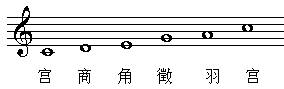

五声简介
“宫、商、角、徵、羽”是我国五声音调中五个不同音的名称，类似现在简谱中的1、2、3、5、6。即宫等于1(Do)，商等于2(Re)，角等于3(Mi)，徵等于5(So)，羽等于6(La)，亦称作五音。 最早的“宫商角徵羽”的名称见于距今2600余年的春秋时期，在《管子·地员篇》中，有采用数学运算方法获得“宫、商、角、徵、羽”五个音的科学办法，这就是中国音乐史上著名的“三分损益法”。宫商角徵羽这五音是中国古乐基本音阶，同西方有别，有时为表达特殊感情，歌手或乐手也在五声音级基础上加入某些变化音级，从而形成六声或七声音阶。如用西乐的七个音阶对照一下的话，古中乐的“五音”相当于do、re、mi、sol、la少去了半音递升的“fa”和“si”。 当然，古中乐的五音唱名，不可能同西乐的“哆、来、咪、索、拉”叫法一样，唐代时用“合、四、乙、尺、工”；更古则用“宫、商、角、徵、羽”了。所以，如果我们稍加留意，正宗中国古乐曲，是没有“发（fa）”和“稀（si）”两个音阶的。比如，现在还时有听到的江南小调《茉莉花》即是古曲之一，它全曲若用唱名哼出，只有“哆、来、咪、索、拉”，全无“发、稀”两音；名古曲，岳飞词的《满江红》亦然。
gōng宫
通常相当于今首调唱名中的do音。“宫”音为五音之主、五音之君，统帅众音。《国语·周语下》曰：“夫宫，音之主也，第以及羽。” 《礼记·乐记》曰：“宫为君、商为臣、角为民……”宋张炎《词源·五音相生》亦曰：“宫属土，君之象……宫，中也，居中央，畅四方，唱施始生，为四声之纲。” 宫调（式）又为众调（式）之“主”、之“君”，即就其今所谓之“调高”而言。《隋书·音乐志》云：“每宫应立五调”“牛弘遂因郑译之旧，又请依古‘五声五律’旋相为宫： ‘雅乐’每宫但一调，惟‘迎气’奏五调，谓之‘五音’；‘缦乐’用七调……”此所谓“宫”，与“均”通。有以宫音为主音、结声构成的调（式）名。
shāng商
通常相当于今首调唱名中的re音。“商”音为五音第二级，居“宫”之次。古人认为，“商，属金，臣之象”，“臣而和之”。有以商音为主音、结声构成的调（式）名。 如唐段安节的《乐府杂录·别乐识五音轮二十八调图》中的“入声商七调”。
jué角
通常相当于今首调唱名中的mi音。“角”为五音之第三级，居“商”之次。古人以为，“角属木，民之象”。有以角音为主音、结声构成的调（式）名。 如唐段安节的《乐府杂录·别乐识五音轮二十八调图》中的“上声角七调”。在古代的调（式）中，有以角音为调之角调，或有以闰宫为角之角调。
zhǐ徵
通常相当于今首调唱名中的sol音。“徵”为五音之第四级，居“角”之次。古人以为，“徵属火，事之象”。有以徵音为主音、结声构成的调（式）名。
yǔ羽
通常相当于今首调唱名中的la音。“羽”为五音之第五级，居“徵”之次。古人以为，“羽属水，物之象”。有以羽音为主音、结声构成的调（式）名。 如唐段安节的《乐府杂录·别乐识五音轮二十八调图》中的“平声羽七调”。
